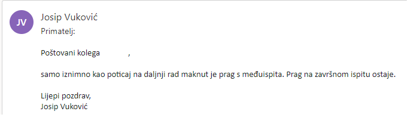

Eh da hoće opet maknuti prag 😂😭
BillIK kolko ja vidim već su maknuli prag. Pisao sam danas isto ispit koji ima prag i tu mi pored bodova stoji zastavica jesam li prošao ili nisam. Uz bodove iz svemirskih završnog ne stoji nikakva zastavica. 🙏
indythedog ummmm di
🤡 Pod nastavne aktivnosti Iako sad vidim da piše da je samo 32 ljudi pisalo ispit, pa možda nisu unijeli svima još
JoKing elon musk watch your back!
JoKing
Prag na završnom ispitu ostaje prema odgovoru dr. sc. Vukovića.
Argadem Nisu makli prag?
Argadem MI prođem maknu prag, ZI ne prođem ne maknu prag. Naravno mogao sam to i očekivati, nemoguće je da ja imam barem mrvicu sreće na faksu.
Sokol
Nisu. Za prolaz je potrebno 10 bodova na završnom.

Evo da ne bi bilo da izmišljam.